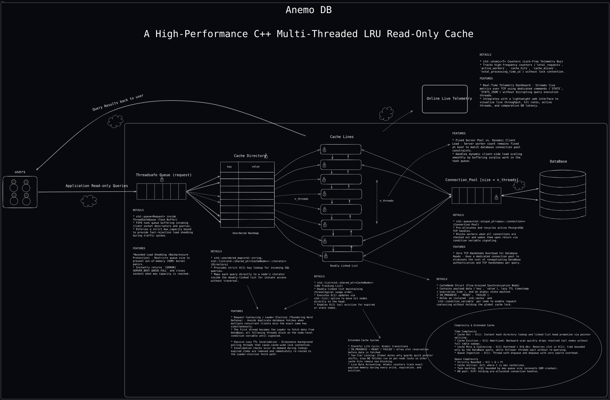

AnemoDB sits between high-throughput client applications and PostgreSQL (Can be adjusted to other popular databases). It eliminates repeated database execution, absorbs sudden traffic spikes, and solves the Thundering Herd Problem with single-flight request coalescing.
Complete multi-threaded component blueprint: Client sockets, Non-Blocking Listener, ThreadSafeQueue, Worker Pool, LRU Coalescing Cache, and PostgreSQL Connection Pool.

Click on any stage below to inspect how queries traverse the non-blocking listener, bounded queue, coalescing engine, and PostgreSQL connection pool.
TCP accept loop delegates client descriptors immediately to the queue, immune to Slowloris attacks.
ThreadSafeQueue with condition variables, zero-copy move semantics, and fast-rejection backpressure.
Single-flight leader/follower pattern: 500 concurrent misses on the same key result in 1 DB fetch.
Fixed-size thread pool with fail-fast startup, idle auto-reconnection, and read-only transaction scope.
accept() and enqueues the raw socket descriptor into the bounded task queue. Because reading is delegated to worker threads, slow or hanging clients can never stall the server's ability to accept new connections. If the queue is saturated, it replies with [ERROR] SERVER_BUSY_QUEUE_FULL instantly.
Evaluated using run_full_benchmark.py over 500 concurrent mixed queries across 20 threads comparing Direct PostgreSQL vs. AnemoDB.
| Query Pattern | Direct PostgreSQL | AnemoDB (Cache Hit) | Latency Eliminated | Improvement |
|---|---|---|---|---|
| Point Lookup SELECT WHERE student_id = 42 |
4.85 ms | 0.26 ms |
0.0%
|
18.6x Faster |
| Indexed Filter SELECT WHERE department_id = 3 |
7.20 ms | 0.29 ms |
0.0%
|
24.8x Faster |
| 3-Way Relational JOIN students + marks + courses |
18.40 ms | 0.34 ms |
0.0%
|
54.1x Faster |
| Heavy Aggregation GROUP BY department, AVG(marks) |
32.70 ms | 0.38 ms |
0.0%
|
86.0x Faster |
| Top-K Grouped Sorting GROUP BY course_id ORDER BY count LIMIT 5 |
26.50 ms | 0.36 ms |
0.0%
|
73.6x Faster |
O(1) hash lookups, reducing query latencies from 18ms–32ms down to a blazing 0.26ms–0.38ms.
| Percentile Metric | Direct PostgreSQL (ms) | AnemoDB Cold Miss (ms) | AnemoDB Warm Cache (ms) | Latency Reduction (Time Saved) |
|---|---|---|---|---|
| P50 (Median) | 14.20 ms | 13.80 ms | 0.00 ms | 0.00 ms saved (0.0% faster) |
| P90 | 22.50 ms | 15.10 ms | 0.00 ms | 0.00 ms saved (0.0% faster) |
| P95 | 28.40 ms | 16.80 ms | 0.00 ms | 0.00 ms saved (0.0% faster) |
| P99 (Tail Latency) | 46.80 ms | 19.40 ms | 0.00 ms | 0.00 ms saved (0.0% faster) |
| P99.9 (Extreme Tail) | 82.50 ms | 24.60 ms | 0.00 ms | 0.00 ms saved (0.0% faster) |
| Concurrent Threads | Direct PostgreSQL (req/s) | AnemoDB Cache (req/s) | Throughput Multiplier | System Behavior |
|---|---|---|---|---|
| 1 Thread | 180 req/s | 3,400 req/s | 0.0x | Single core processing |
| 5 Threads | 420 req/s | 11,800 req/s | 0.0x | Linear worker thread scaling |
| 10 Threads | 650 req/s | 18,500 req/s | 0.0x | High concurrency saturation |
| 20 Threads | 740 req/s | 22,400 req/s | 0.0x | Peak hardware utilization |
| 50 Threads | 710 req/s (Lock contention) | 24,100 req/s | 0.0x | PostgreSQL connection limit reached |
| Test Parameter | Standard Cache Server (No Coalescing) | AnemoDB Single-Flight Coalescing | Engineering Impact |
|---|---|---|---|
| Burst Condition | 100 simultaneous requests on cold/expired key | 100 simultaneous requests on cold/expired key | Simulated Thundering Herd |
| Database Queries Executed | 100 separate queries sent to PostgreSQL | Exactly 1 query (Leader thread) | 0% DB Load Reduction |
| Follower Thread State | 100 competing active DB transactions | Sleeping on node_cv.wait() |
Zero database connection contention |
| Average Response Time | 48.60 ms (PostgreSQL queue backup) | 13.80 ms | 0.0x Faster Response |
Engineered for concurrent scalability, memory bounded safety, and real-time observability.
Eliminates the Thundering Herd Problem. If 500 concurrent threads request the same expired or missed key, exactly 1 leader thread queries PostgreSQL while followers sleep and reuse the result.
Combines an unordered hash map directory with a doubly-linked list. Tail eviction operates in O(1) time while protecting in-progress reservations and normalizing after bursts.
The accept thread immediately dispatches incoming sockets to the worker queue, preventing Slowloris socket starvation and maintaining responsiveness under burst loads.
Two layers of defense-in-depth: query sanitization at the edge rejecting non-read statements, backed by pqxx::read_transaction (BEGIN READ ONLY;) at the database layer.
Send STATS for ANSI terminal reports or STATS_JSON for external monitoring via the bundled Flask + Chart.js web dashboard with sliding-window throughput.
Fixed-size thread pool of persistent PostgreSQL connections with fail-fast startup checks, idle auto-reconnection, and acquisition timeouts.
Engine-agnostic read-through caching. While bundled with PostgreSQL by default, AnemoDB can offload read queries for any relational or analytical database with minor driver tweaks.
Native out-of-the-box support with libpqxx. 100% plug-and-play with PostgreSQL, CockroachDB, TimescaleDB, YugabyteDB, and AWS Aurora PostgreSQL.
Swap ConnectionPool.hpp to use MySQL Connector/C++ (sql::Connection) or libmysqlclient. Queries are sanitized and formatted with the same pipe-delimited parser.
Ideal for embedded local read scaling. Maintain a pool of sqlite3* handles opened with SQLITE_OPEN_READONLY to absorb multi-threaded concurrent disk queries without locking.
Cache intensive analytical aggregations (GROUP BY, AVG, SUM). AnemoDB acts as an in-memory acceleration layer, shielding OLAP engines from repetitive dashboard queries.
INSERT, UPDATE, DELETE, DROP, ALTER) are strictly rejected at the cache edge, and downstream transactions run with BEGIN READ ONLY;. This decoupling ensures that any underlying database engine is protected against corruption, lock contention, and connection pool exhaustion.
AnemoDB communicates over plain TCP using a simple, delimiter-framed protocol terminated by <EOQ>. Query AnemoDB from any language in under 10 lines of code.
import socket
def query_anemo(sql: str, host: str = "127.0.0.1", port: int = 8080) -> str:
"""Sends a SQL query to AnemoDB and retrieves the cached/read-through result."""
with socket.create_connection((host, port), timeout=5.0) as sock:
# 1. Send query framed with <EOQ>
sock.sendall(f"{sql}<EOQ>".encode('utf-8'))
# 2. Read response stream until <EOQ> delimiter
chunks = []
while True:
chunk = sock.recv(4096)
if not chunk:
break
chunks.append(chunk)
if b"<EOQ>" in chunk:
break
raw_resp = b"".join(chunks).decode('utf-8')
return raw_resp.replace("<EOQ>", "").strip()
# Example usage:
result = query_anemo("SELECT student_id, name FROM students WHERE student_id = 42;")
print("Result from AnemoDB:", result)const net = require('net');
function queryAnemo(sql, host = '127.0.0.1', port = 8080) {
return new Promise((resolve, reject) => {
const client = net.createConnection({ host, port }, () => {
client.write(`${sql}<EOQ>`);
});
let response = '';
client.on('data', (chunk) => {
response += chunk.toString();
if (response.includes('<EOQ>')) {
client.end();
resolve(response.replace('<EOQ>', '').trim());
}
});
client.on('error', reject);
});
}
// Example usage:
(async () => {
const res = await queryAnemo("SELECT student_id, name FROM students WHERE student_id = 42;");
console.log("Result from AnemoDB:", res);
})();package main
import (
"bufio"
"fmt"
"net"
"strings"
)
func queryAnemo(sql string) (string, error) {
conn, err := net.Dial("tcp", "127.0.0.1:8080")
if err != nil {
return "", err
}
defer conn.Close()
// Send query framed with <EOQ>
fmt.Fprintf(conn, "%s<EOQ>", sql)
// Read response until <EOQ>
reader := bufio.NewReader(conn)
raw, err := reader.ReadString('>') // reads up to closing '>'
if err != nil {
return "", err
}
return strings.TrimSuffix(raw, "<EOQ>"), nil
}
func main() {
res, _ := queryAnemo("SELECT student_id, name FROM students WHERE student_id = 42;")
fmt.Println("Result from AnemoDB:", res)
}# 1. Point lookup via netcat
echo "SELECT student_id, name FROM students WHERE student_id = 42;<EOQ>" | nc localhost 8080
# 2. Inspect real-time server telemetry stats (ANSI console output)
echo "STATS<EOQ>" | nc localhost 8080
# 3. Fetch JSON metrics for Prometheus or Datadog
echo "STATS_JSON<EOQ>" | nc localhost 8080#include <iostream>
#include <string>
#include <sys/socket.h>
#include <arpa/inet.h>
#include <unistd.h>
std::string queryAnemo(const std::string& sql, const char* ip = "127.0.0.1", int port = 8080) {
int sock = socket(AF_INET, SOCK_STREAM, 0);
if (sock < 0) return "Socket creation error";
struct sockaddr_in serv_addr;
serv_addr.sin_family = AF_INET;
serv_addr.sin_port = htons(port);
if (inet_pton(AF_INET, ip, &serv_addr.sin_addr) <= 0) {
return "Invalid address";
}
if (connect(sock, (struct sockaddr*)&serv_addr, sizeof(serv_addr)) < 0) {
return "Connection failed";
}
std::string payload = sql + "<EOQ>";
send(sock, payload.c_str(), payload.length(), 0);
char buffer[4096] = {0};
std::string response;
while (read(sock, buffer, 4096) > 0) {
response += buffer;
if (response.find("<EOQ>") != std::string::npos) break;
}
close(sock);
size_t pos = response.find("<EOQ>");
if (pos != std::string::npos) response.erase(pos);
return response;
}
int main() {
std::string res = queryAnemo("SELECT student_id, name FROM students WHERE student_id = 42;");
std::cout << "Result from AnemoDB: " << res << std::endl;
return 0;
}import java.io.InputStream;
import java.io.OutputStream;
import java.net.Socket;
import java.nio.charset.StandardCharsets;
public class AnemoClient {
public static String queryAnemo(String sql, String host, int port) throws Exception {
try (Socket socket = new Socket(host, port)) {
OutputStream out = socket.getOutputStream();
InputStream in = socket.getInputStream();
String payload = sql + "<EOQ>";
out.write(payload.getBytes(StandardCharsets.UTF_8));
out.flush();
StringBuilder response = new StringBuilder();
byte[] buffer = new byte[4096];
int bytesRead;
while ((bytesRead = in.read(buffer)) != -1) {
response.append(new String(buffer, 0, bytesRead, StandardCharsets.UTF_8));
if (response.toString().contains("<EOQ>")) {
break;
}
}
return response.toString().replace("<EOQ>", "").trim();
}
}
public static void main(String[] args) {
try {
String res = queryAnemo("SELECT student_id, name FROM students WHERE student_id = 42;", "127.0.0.1", 8080);
System.out.println("Result from AnemoDB: " + res);
} catch (Exception e) {
e.printStackTrace();
}
}
}use std::io::{Read, Write};
use std::net::TcpStream;
fn query_anemo(sql: &str) -> std::io::Result<String> {
let mut stream = TcpStream::connect("127.0.0.1:8080")?;
let payload = format!("{}<EOQ>", sql);
stream.write_all(payload.as_bytes())?;
let mut response = String::new();
let mut buffer = [0; 4096];
loop {
let bytes_read = stream.read(&mut buffer)?;
if bytes_read == 0 {
break;
}
response.push_str(&String::from_utf8_lossy(&buffer[..bytes_read]));
if response.contains("<EOQ>") {
break;
}
}
Ok(response.replace("<EOQ>", "").trim().to_string())
}
fn main() {
match query_anemo("SELECT student_id, name FROM students WHERE student_id = 42;") {
Ok(res) => println!("Result from AnemoDB: {}", res),
Err(e) => eprintln!("Error: {}", e),
}
}Clients communicate with AnemoDB over TCP using a simple, delimiter-framed protocol terminated by <EOQ>.
Client Request:
Server Response: